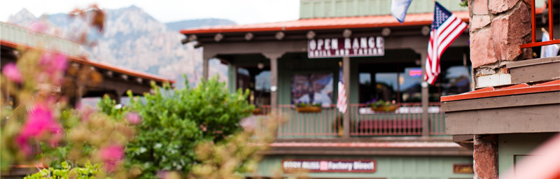
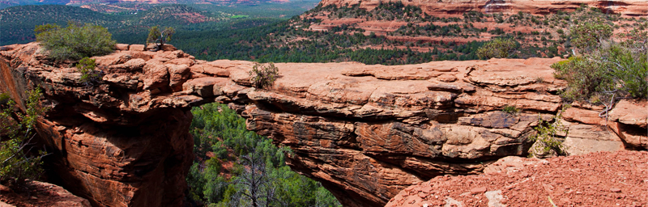
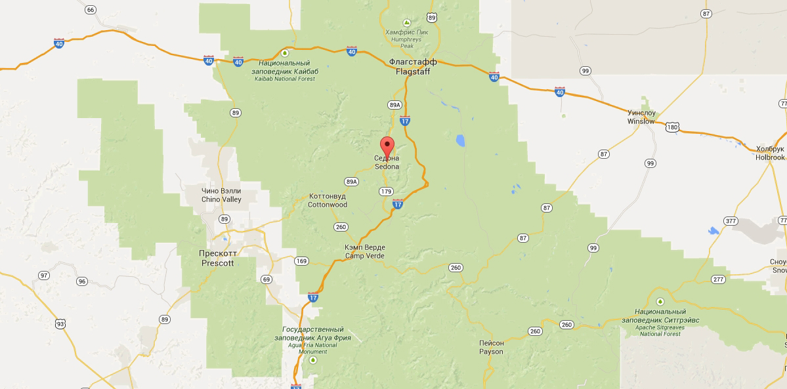

Настоящий городок
— №2 —
Седона — не аттракцион для туристов, там
течёт своя жизнь

Рассмотрим 5 причин, по которым Седона круче, чем гранд каньон!
— №2 —
Седона — не аттракцион для туристов, там
течёт своя жизнь

Рекомендуем пожить в настоящем мотеле, всё как в кино!
Всегда заказывайте фирменный бургер, вы не разочаруетесь!
Не только китайского, но и местного производства!

— №2 —
Да, по нему можно пройти! Если конечно
вы осмелитесь
— №3 —
все достопримечательности находятся очень близко
— №4 —
ехать в седону из лас-вегаса совсем не скучно!
— №5 —
большинство едет в гранд каньон и толпится там
Укажите предполагаемые даты поездки
, и мы покажем вам лучшие
предложения гостиниц в седоне
